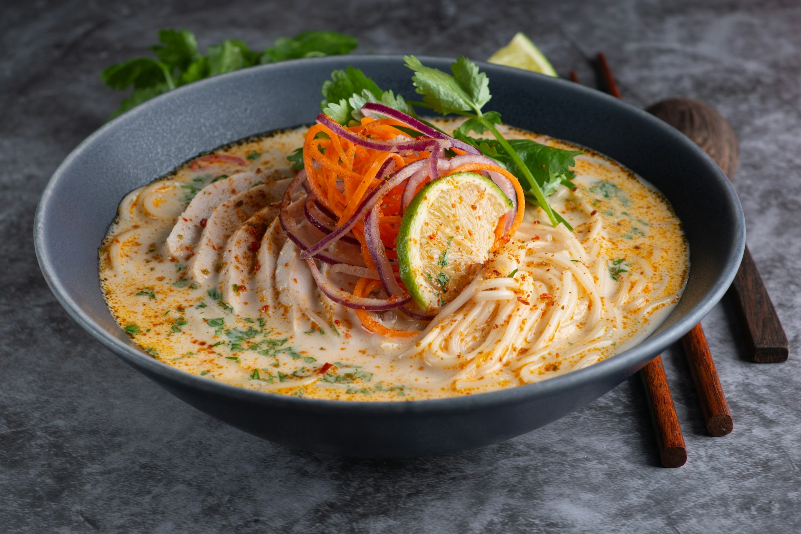

Yellow Thai Curry

Image by Max Griss on Unsplash
You can make a yellow Thai curry on any night of the week. It never disappoints and its spicy touch is sure to keep you warm and give you the energy you need.
Ingredients
- Yellow Thai Curry Paste
- Coconut Milk
- Lime
- Garlic
- Ginger
- Thai Basil Leaves
- Tofu
- Courgette
- Mushrooms
- Carrots
- Rice
Step by step
- Start by chopping all your vegetables into pieces and set aside for later.
- Chop garlic and ginger into small pieces and throw them in a wok pan with some oil.
- Fry for a minute.
- Then add a fair amount of the curry paste and fry it for a little bit. Put it on low heat for now.
- Chop your tofu into pieces and throw them in the wok pan.
- Then add all the vegetables.
- Let it all fry for a couple of minutes on low heat.
- Then throw in a can of coconut milk and turn the heat up to medium.
- Add Thai Basil Leaves to the mix.
- Let it simmer in the wok for about 20-30 minutes until vegetables have softened.
- While the curry is simmering, boil the rice.
- When the curry is ready, squeeze some fresh lime juice on the end result.
- Serve it with rice on the side.
- Enjoy!
Home